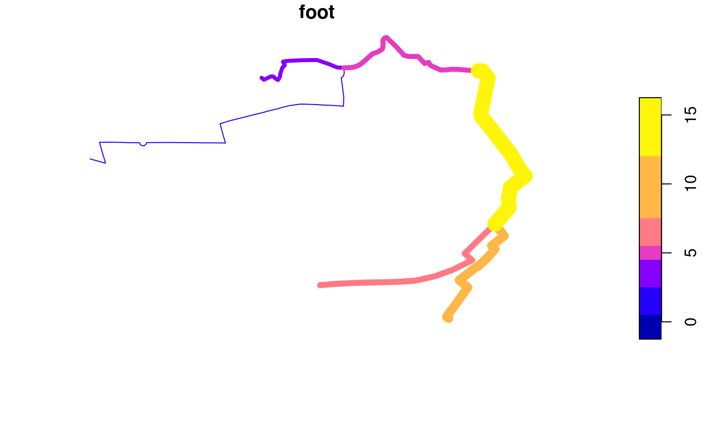

stplanr is a package for sustainable transport planning with R.
It provides functions for solving common problems in transport planning and modelling, such as how to best get from point A to point B. The overall aim is to provide a reproducible, transparent and accessible toolkit to help people better understand transport systems and inform policy, as outlined in a paper about the package, and the potential for open source software in transport planning in general, published in the R Journal.
The initial work on the project was funded by the Department of Transport (DfT) as part of the development of the Propensity to Cycle Tool (PCT), a web application to explore current travel patterns and cycling potential at zone, desire line, route and route network levels (see www.pct.bike and click on a region to try it out). The basis of the methods underlying the PCT is origin-destination data, which are used to highlight where many short distance trips are being made, and estimate how many could switch to cycling. The results help identify where cycleways are most needed, an important component of sustainable transport planning infrastructure engineering and policy design. See the package vignette (e.g. via vignette("introducing-stplanr")) or an academic paper on the Propensity to Cycle Tool (PCT) for more information on how it can be used. This README provides some basics.
stplanr should be useful to researchers everywhere. The function route_graphhopper(), for example, works anywhere in the world using the graphhopper routing API and read_table_builder() reads-in Australian data. We welcome contributions that make transport research easier worldwide.
Key functions
Data frames representing flows between origins and destinations must be combined with geo-referenced zones or points to generate meaningful analyses and visualisations of ‘flows’ or origin-destination (OD) data. stplanr facilitates this with od2line(), which takes flow and geographical data as inputs and outputs spatial data. Some example data is provided in the package:
Let’s take a look at this data:
od_data_sample[1:3, 1:3] # typical form of flow data
#> # A tibble: 3 x 3
#> geo_code1 geo_code2 all
#> <chr> <chr> <dbl>
#> 1 E02002361 E02002361 109
#> 2 E02002361 E02002363 38
#> 3 E02002361 E02002367 10
cents_sf[1:3,] # points representing origins and destinations
#> Simple feature collection with 3 features and 4 fields
#> geometry type: POINT
#> dimension: XY
#> bbox: xmin: -1.546463 ymin: 53.8041 xmax: -1.511861 ymax: 53.81161
#> epsg (SRID): 4326
#> proj4string: +proj=longlat +datum=WGS84 +no_defs
#> geo_code MSOA11NM percent_fem avslope geometry
#> 1708 E02002384 Leeds 055 0.458721 2.856563 POINT (-1.546463 53.80952)
#> 1712 E02002382 Leeds 053 0.438144 2.284782 POINT (-1.511861 53.81161)
#> 1805 E02002393 Leeds 064 0.408759 2.361707 POINT (-1.524205 53.8041)These datasets can be combined as follows:
travel_network <- od2line(flow = od_data_sample, zones = cents_sf)
w <- flow$all / max(flow$all) *10
plot(travel_network, lwd = w)
stplanr has many functions for working with OD data. See the stplanr-od vignette for details.
The package can also allocate flows to the road network, e.g. with CycleStreets.net and the OpenStreetMap Routing Machine (OSRM) API interfaces. These are supported in route_*() functions such as route_cyclestreets and route_osrm():
Route functions take lat/lon inputs (results not calculated):
and place names, found using the Google Map API:
We can replicate this call multiple times using line2route, in this case lines 2 to 5. First we’ll create a small subset of the lines:
Next, we’ll calculate the routes (not not evaluated):
The resulting routes will look something like this:
lwd <- desire_lines$foot
routes <- routes_fast_sf[2:6, ]
plot(routes$geometry, lwd = lwd)
plot(desire_lines$geometry, col = "green", lwd = lwd, add = TRUE)
For more examples, example("line2route").
overline is a function which takes a series of route-allocated lines, splits them into unique segments and aggregates the values of overlapping lines. This can represent where there will be most traffic on the transport system, as demonstrated in the following code chunk.
routes$foot <- desire_lines$foot
rnet <- overline2(routes, attrib = "foot")
#> 2019-08-05 18:01:09 constructing segments
#> 2019-08-05 18:01:09 building geometry
#> 2019-08-05 18:01:09 simplifying geometry
#> 2019-08-05 18:01:09 aggregating flows
#> 2019-08-05 18:01:09 rejoining segments into linestringsThe resulting route network, with segment totals calculated from overlapping parts for the routes for walking, can be visualised as follows:

The above plot represents the number walking trips made (the ‘flow’) along particular segments of a transport network.
Policy applications
The examples shown above, based on tiny demonstration datasets, may not seem particularly revolutionary. At the city scale, however, this type of analysis can be used to inform sustainable transport policies, as described in papers describing the Propensity to Cycle Tool (PCT), and its application to calculate cycling to school potential across England.
Results generated by stplanr are now part of national government policy: the PCT is the recommended tool for local and regional authorities developing strategic cycle network under the Cycling and Walking Infrastructure Strategy (CWIS), which is part of the Infrastructure Act 2015. stplanr is helping dozens of local authorities across the UK to answer the question: where to prioritise investment in cycling? In essence, stplanr was designed to support sustainable transport policies.
There are many other research and policy questions that functions in stplanr, and other open source software libraries and packages, can help answer. At a time of climate, health and social crises, it is important that technology is not only sustainable itself (e.g. as enabled by open source communities and licenses) but that it contributes to a sustainable future.
Installation
To install the stable version, use:
The development version can be installed using devtools:
# install.packages("devtools") # if not already installed
devtools::install_github("ropensci/stplanr")
library(stplanr)stplanr depends on rgdal, which can be tricky to install.
Installing stplanr on Linux and Mac
stplanr depends on sf. Installation instructions for Mac, Ubuntu and other Linux distros can be found here: https://github.com/r-spatial/sf#installing
Funtions, help and contributing
The current list of available functions can be seen on the package’s website at ropensci.github.io/stplanr/, or with the following command:
To get internal help on a specific function, use the standard way.
To contribute, report bugs or request features, see the issue tracker.
Further resources / tutorials
Want to learn how to use open source software for reproducible sustainable transport planning work? Now is a great time to learn. Transport planning is a relatively new field of application in R. However, there are already some good resources on the topic, including (any further suggestions: welcome):
- The Transport chapter of Geocomputation with R, which provides a broad introduction from a geographic data perspective: https://geocompr.robinlovelace.net/transport.html
- The stplanr paper, which describes the context in which the package was developed: https://journal.r-project.org/archive/2018/RJ-2018-053/index.html (please cite this if you use stplanr in your work)
- The
dodgrvignette, which provides an introduction to routing in R: https://cran.r-project.org/package=dodgr/vignettes/dodgr.html
Meta
- Please report issues, feature requests and questions to the github issue tracker
- License: MIT
- Get citation information for stplanr in R doing
citation(package = 'stplanr') - This project is released with a Contributor Code of Conduct. By participating in this project you agree to abide by its terms.